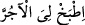

tanımıyorum,” yâni yeryüzünde benden başka bir ilâhınızın olduğunu bilmiyorum. Yâni
Mûsâ (a.s.) şöyle der: Göklerin rabbi olan başka bir Allah mı var?
Denilmiştir ki: Firavun’un bu sözü ile “
(Ben sizin en yüce Rabbinizim)”
(en-Nâziât, 79/24) sözü arasında tam kırk yıl vardır, yâni aradan kırk yıl geçmiştir.
Firavun veziri Hâmân’a: “Ey Hâmân! Haydi benim için çamur üzerine ateş yak”
yâni benim için toprak ve suyla karıştırılmış çamurdan tuğla yap. Yani, Ey Haman!
Benim için çamurun üzerine bir ateş yak da o çamur pişsin ve onunla bina sağlam olsun.
Pişirilmiş tuğlayı ilk defa kullanan kişi Firavun’dur. Onun için burada tuğlanın yapılış
biçimine dikkat çeken bir ifâde kullanarak tuğla edinilmesini emretmiş ve “__WORD__ (bana tuğla pişir)” dememiştir.
“Bana” minâre ve nişantaşı gibi yüksek “bir kule” yâni üzerinde yürüyebileceğim,
merdiven gibi basamakları olan yüksek bir köşk “yap ki Mûsâ’nın tanrısına çıkayım;”
belki onun ne olduğuna muttali olurum; yâni belki onu tanırım ve nasıl olduğunu
görürüm. Mûsâ (a.s.) şöyle dedi: “Ama sanıyorum, o” yâni Mûsâ benden başka ilâhı
olduğu ve kendisinin de onun elçisi olarak gönderildiği hususunda “mutlaka yalan
söyleyenlerdendir, dedi.”
Firavun bu sözleri, gerçekten bir araştırma yapmak için değil, kavminin kafasını
karıştırmak ve onları yanıltmak için söylemiştir. Zira Allah Teâlâ onun hakkında şöyle
buyurmaktadır: “Kendileri de bunlara yakînen inandıkları halde, sırf zulüm ve
kibirlerinden ötürü onları inkâr ettiler.” (en-Neml, 27/14)
el-Es’iletü’l-müfhıme’de der ki: Firavun’un, nefsindeki ilâhlık dâvâsında şüphe ve
tereddüd ettiği zannedilmesin. Çünkü o, nefsinin başka şeylere muhtaç olduğunu ve
âfetlere mâruz kaldığını biliyordu. Fakat o, inatçı olup ilahlık dâvâsına kendisi de
inanmayan bir inkârcı idi.
Kâşifî der ki: Firavun tasavvur etmişti ki Hak Teâlâ’nın cismi ve cismâniyeti vardır;
gökyüzünde mekânı vardır ve ona yükselmek mümkündür. Halbuki şunu bilmiyordu:
Mekânı yaratan mekânı ne yapsın?
Âsumânı yaratan âsumânı ne yapsın?
Ne mekân yol bulur O’na ne de zaman
Ne ifâde O’ndan haber verebilir ne aşikâr olan
Keşşâf sâhibi şöyle der: Rivâyete göre mel’un Hâmân tuğla, kireç ve alçı pişirmek ve
ağaç yontmak üzere amelelerden başka elli bin usta topladı ve binanın yapılmasını
emretti. Bu durum, Mûsâ ve Harun’a ağır geldi; çünkü İsrâiloğulları Firavun’un bina
inşâsında işkence görüyorlardı.
Ebül-Leys der ki: Köşkün harcı ve sıvası, kristal artıklarından oluşuyordu. Kişi,
duvar uzun olduğu için rüzgarın kendisini savurmasından korkuyor, üzerinde
duramıyordu. Duvarların boyu beş bin, genişliği ise üç bin arşın idi.[106] O öyle yüksek